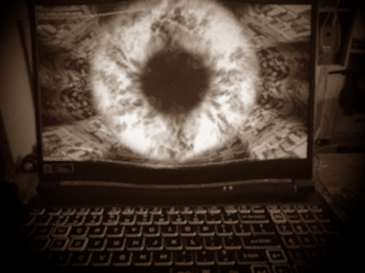

SCP Foundation Secure Containment Protocol
Item #: SCP-51557 (Acer Nitro 5 Gaming Laptop)
Object Class: Safe
Special Containment Procedures:
SCP-51557 is to be contained in a standard low-value containment locker at Site-XX. Access to SCP-51557 requires
Level 2 clearance and above. Testing on SCP-51557 is currently suspended unless approved by Site Director
███████. Any instances of SCP-51557-1 are to be immediately reported to Site Security and handled according to
established protocol.
Description:
SCP-51557 is an Acer Nitro 5 gaming laptop, model ████. Physically, SCP-51557 does not display any anomalous
properties, and its external appearance is consistent with a non-anomalous version of the same model.
The anomalous properties of SCP-51557 manifest when the device is turned on and its software is accessed. When
powered on, SCP-51557 displays a user interface similar to a standard laptop, but it functions as a gateway to
an
alternate reality. This alternate reality, designated SCP-51557-A, appears to be a distorted and unstable
version
of our own universe.
Upon entering SCP-51557-A, subjects experience a range of unpredictable and often hazardous phenomena. These
phenomena include but are not limited to:
- Reality Distortions: Gravity fluctuations, sudden shifts in environment, and spatial anomalies.
- Entity Encounters: Subjects have reported encountering bizarre and potentially hostile entities
that do not exist in our reality.
- Temporal Anomalies: Time dilation, time loops, and instances of déjà vu.
- Visual and Auditory Hallucinations: Subjects have reported hearing voices, seeing illusions, and
experiencing altered perceptions.
Due to the unpredictable and hazardous nature of SCP-51557-A, all testing and exploration have been suspended.
Several incidents involving SCP-51557-1 have resulted in injuries and psychological trauma to personnel.
SCP-51557-1 refers to individuals who have entered SCP-51557-A and subsequently returned.
Addendum 51557-A: Incident Log 51557-A-1
On ██, Researcher ████████ initiated unauthorized testing on SCP-51557.
████████ entered SCP-51557-A and did not return. After █,
████████ reappeared in a distressed state, showing signs of extreme anxiety and paranoia. Attempts to debrief
████████ were unsuccessful, and ████████ terminated their own life █████.
As a result of Incident 51557-A-1, all testing and exploration of SCP-51557 and SCP-51557-A have been suspended
indefinitely.
Note from Site Director ███████: It is imperative that all personnel adhere to the containment
procedures outlined above. SCP-51557 has proven to be a highly dangerous and unpredictable anomaly, and any
further attempts to access SCP-51557-A without proper authorization will result in severe disciplinary actions.
For any further inquiries or updates, please contact Site Director ███████.
[END OF DOCUMENT]
Addendum 51557-B: Incident Log 51557-B-1

On ██, an incident involving SCP-51557 occurred due to an unexpected anomaly related to overheating.
Researcher ███████ was conducting routine testing on SCP-51557's software when the laptop
began to exhibit unusual behavior. As the testing progressed, SCP-51557's internal temperature began to rise
rapidly, causing the laptop to emit a high-pitched whining noise.
Despite efforts to shut down SCP-51557, the device continued to heat up, and its external casing became
dangerously hot to the touch. At this point, SCP-51557's screen displayed a distorted image of a fiery
landscape,
which appeared to be a reflection of the laptop's internal temperature. Suddenly, SCP-51557 released a burst of
intense heat, causing nearby objects to ignite and triggering the site's fire suppression system.
Security personnel evacuated the testing chamber, and the fire was contained. Once the chamber was deemed safe,
personnel entered to assess the damage. SCP-51557 had cooled down significantly and displayed no further
anomalous behavior. However, a scorch mark resembling the image on the screen was left on the laptop's display.
Researcher ███████, who had been in close proximity to SCP-51557 during the incident, reported
feeling a sudden wave of extreme heat and hearing voices whispering in an unidentified language.
███████ was subsequently treated for minor burns and underwent psychological evaluation.
Analysis of the scorch mark revealed traces of an unknown substance with anomalous properties. Further research
is ongoing to determine the origin and nature of this substance. It is hypothesized that SCP-51557's overheating
triggered a temporary breach between our reality and SCP-51557-A, leading to the manifestation of the fiery
landscape and the anomalous effects experienced by Researcher ███████.
As a precautionary measure, SCP-51557 is to be monitored for any signs of overheating, and testing involving
elevated temperatures is to be conducted in a controlled environment with enhanced safety measures.
[END OF ADDENDUM]